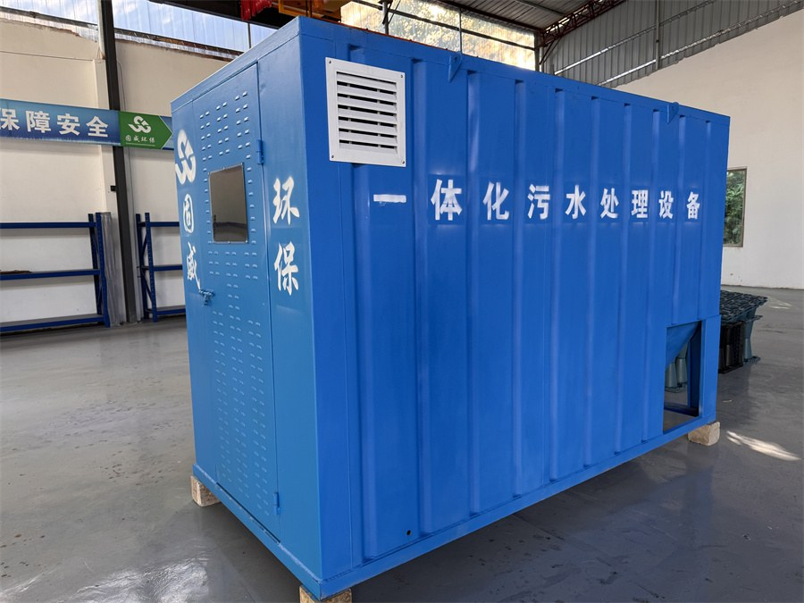

01污水处理设备 ↗
按水质与排放目标配置处理单元。
进水波动、处理负荷与既有设施衔接，需要放在同一套设计条件中评估。
预处理 → 生化处理 → 沉淀及深度处理 → 消毒；同步评估污泥处理与自动控制。
以下为需求评估方向，具体工艺及性能以项目设计与确认资料为准。
| 评估项目 | 参数或确认事项 |
|---|---|
| 设计水量（m³/d） | 由项目资料提供，技术沟通时核对 |
| 峰值流量（m³/h） | 由项目资料提供，技术沟通时核对 |
| 进出水水质（mg/L） | 由项目资料提供，技术沟通时核对 |
| 排放去向与指标 | 由项目资料提供，技术沟通时核对 |
| 用地与既有构筑物 | 由项目资料提供，技术沟通时核对 |
6 万 m³/d · 项目规模由委托方提供。查阅问题、方案与结果资料及项目咨询入口。
只比较设备采购价，会漏掉曝气、药剂、污泥处置和维护费用。
取自官网的设备合作案例栏目，作为设备应用资料展示；具体项目条件及与本场景的适用关系需进一步确认。
留下项目类型、规模和联系方式，便于进一步核对技术需求。
本页为效果预览，表单暂未开放。